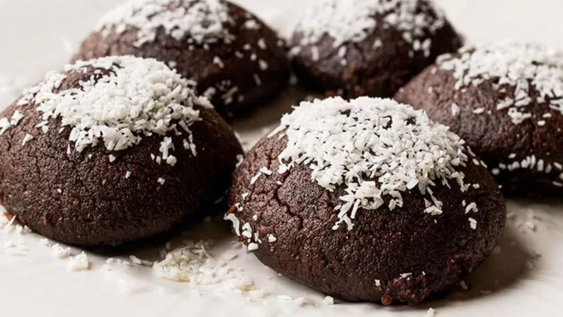
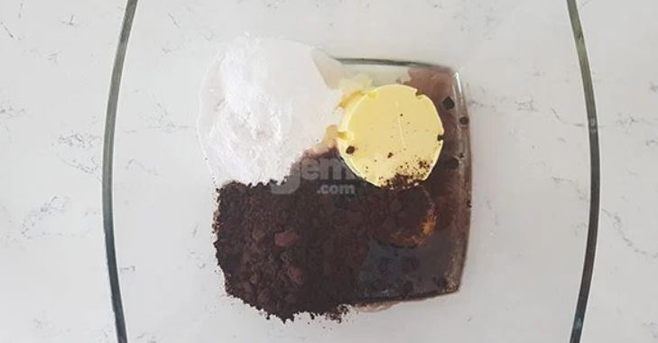
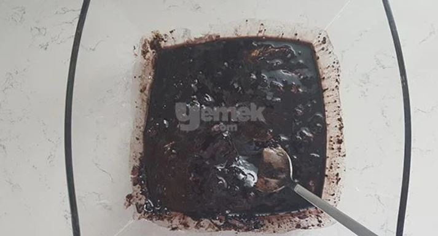
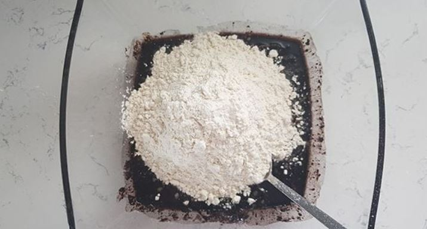
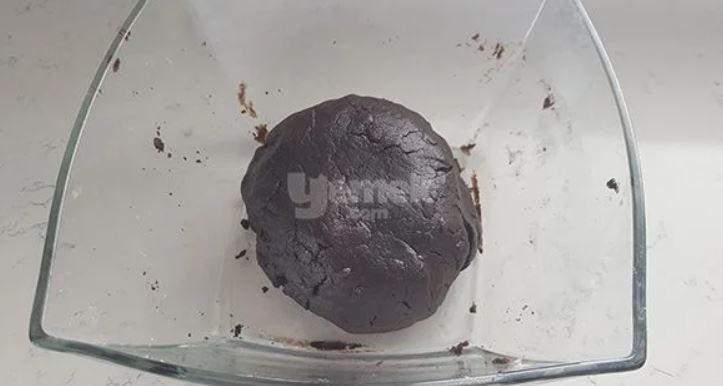
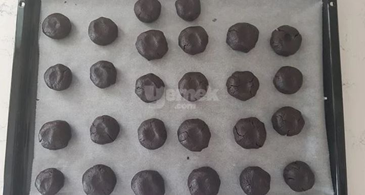
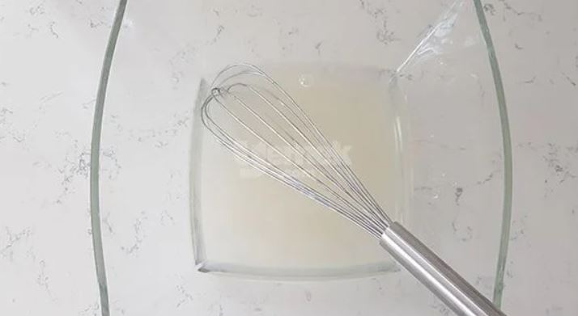
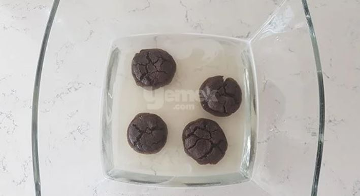
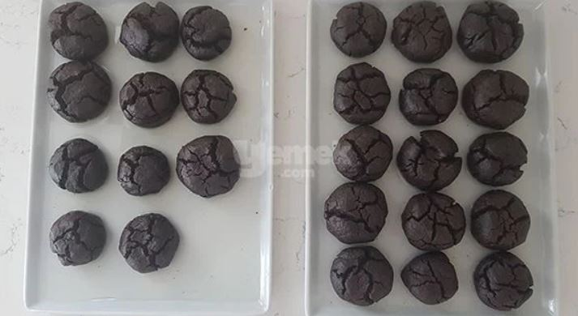
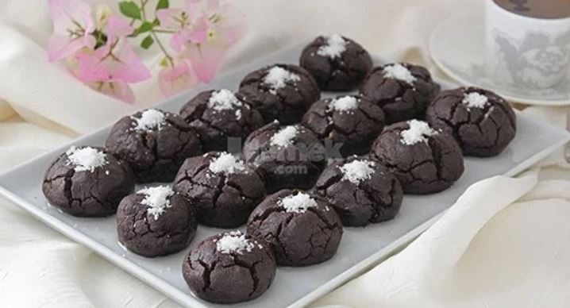

Yemek Tarifleri > Tarifler > Kurabiye Tarifleri > Tatlı Kurabiyeler > Kakaolu Islak Kurabiye
Kakaolu Islak Kurabiye

Çay saati için farklı bir kurabiye tarifi mi aramıştınız? O zaman size ıslak kurabiyeyi önerelim. Evet yanlış okumadınız, ıslak kek değil, ıslak kurabiye. Ağızda dağılan bu kakaolu kurabiyeler misafir sofralarında vazgeçilmeziniz olacak. Çocukların da bayılacağı kakaolu ıslak kurabiyenin yapılışı ve tarifi hemen aşağıda…
Tarif: yemek.com editörü
Kaç Kişilik: 26 adet
Hazırlama Süresi: 15 dakika
Pişirme Süresi: 25 dakika
Malzemeler
Hamuru için:
- 125 gram tereyağı (oda sıcaklığında bekletilmiş) (8,5 yemek kaşığı)
- 1/2 su bardağı (1 parmak fazla) sıvıyağ (120 mililitre)
- 1 adet yumurta
- 1 su bardağı pudra şekeri
- 4 yemek kaşığı kakao
- 1 paket vanilin
- 1 paket kabartma tozu
- 2,5 su bardağı un
Şurubu için:
- 1 su bardağı toz şeker
- 1 su bardağı su (oda sıcaklığında)
Servisi için:
- 1 yemek kaşığı rendelenmiş hindistan cevizi (ya da pudra şekeri)
Püf Noktası
Kurabiyelerin daha gevrek olmasını istiyorsanız fırından çıkardıktan sonra bekleme süresini beş dakika olarak düşünün. Bu şekilde beklettiğiniz kurabiye daha az şerbet çekeceği için daha gevrek olacaktır.
Nasıl Yapılır?
- Derince bir karıştırma kabına oda ısısındaki tereyağını, sıvı yağı, yumurtayı, pudra şekerini, kakaoyu, vanilin ve kabartma tozunu alın.

- Tüm malzemeleri özleşene kadar karıştırın.

- Ardından unu yavaş yavaş ekleyerek, ele yapışmayan bir hamur elde edin.

- Hazırladığınız hamurdan ceviz büyüklüğünde parçalar koparın.

- Avucunuzda yuvarlayın ve parmağınızla ortasına hafifçe bastırdıktan sonra, yağlı kağıt serilmiş bir fırın tepsisine dizin. Önceden ısıtılmış 180 derece fırında yaklaşık 20 dakika kadar pişirin.

- Kurabiyeleriniz fırındayken şurup için gerekli olan şeker ve suyu bir kapta güzelce karıştırın.

- Kurabiyeler fırından çıkınca 2 dakika kadar bekletin ve ardından teker teker hazırladığınız şuruba atın, arkalı önlü çevirin ve bir servis tabağına dizin.

- Tüm kurabiyeleri bu şekilde şuruba batırdıktan sonra kalan şurubu da üstlerine gezdirin ve tüm şerbeti çekene dek bekletin.

- Kurabiyeler şerbeti çektikten sonra üstlerini Hindistan cevizi ile süsleyin ve servis edin. Afiyet olsun.

Afiyet olsun...